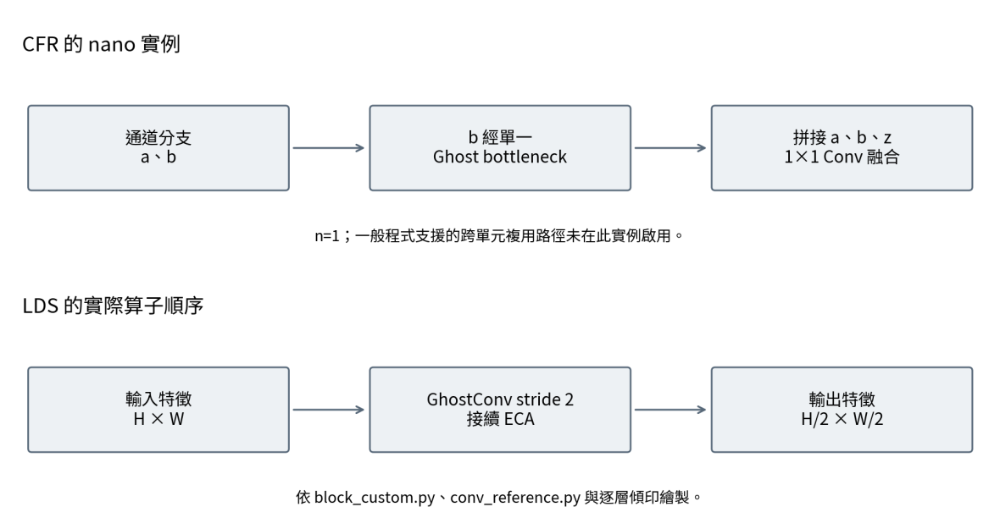
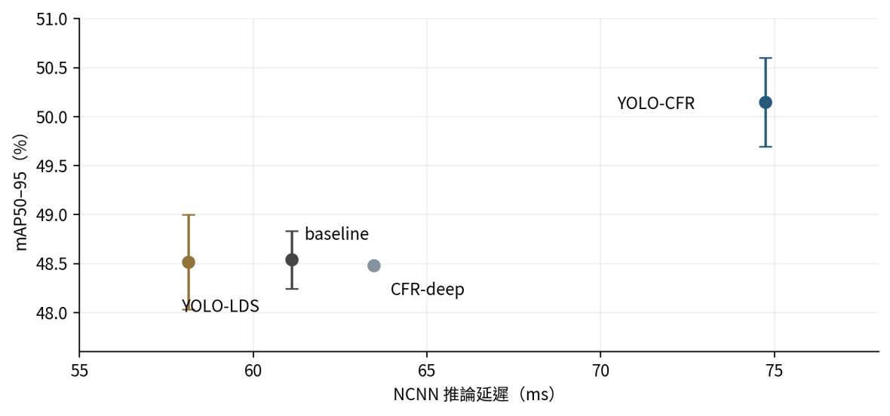

Research highlight專題重點
Use measured device latency to choose a model: CFR improves accuracy at a higher execution cost, while LDS keeps mean accuracy close to baseline with a modest latency reduction.
以實機延遲決定模型取捨：CFR 以較高執行成本換取精度，LDS 則在平均精度接近基準的情況下，小幅降低推論延遲。
Project abstract專題摘要
This project investigates whether lightweight modifications to YOLO26n translate into practical speed gains on the ARM CPU of Raspberry Pi 5. Cross-stage Feature Reuse (CFR) combines Ghost bottlenecks with branch fusion; Lightweight Downsampling (LDS) uses GhostConv followed by ECA at selected downsampling stages. The main models are trained on PASCAL VOC for 100 epochs with three random seeds and exported through ONNX and NCNN FP32 workflows. CFR reaches mean mAP50–95 of 0.5014 versus 0.4854 for baseline, but NCNN inference latency rises from 61.11 to 74.74 ms. LDS reaches 0.4851 mAP50–95, reduces exported FLOPs by 10.9%, and lowers NCNN latency by 4.9% to 58.14 ms. The results distinguish theoretical computation from measured deployment cost.
本專題以 YOLO26n 與 Raspberry Pi 5 ARM CPU 為基礎，探討輕量化架構的理論成本是否能轉換為實際部署加速。CFR 結合 Ghost bottleneck 與分支融合；LDS 以 GhostConv 接續 ECA，取代部分下採樣卷積。主要模型於 PASCAL VOC 以三個隨機種子訓練 100 epochs，再透過 ONNX 與 NCNN 進行 FP32 部署量測。CFR 的平均 mAP50–95 由基準的 0.4854 提升至 0.5014，但 NCNN 推論延遲由 61.11 ms 增至 74.74 ms；LDS 的平均精度為 0.4851，匯出態 FLOPs 降低 10.9%，NCNN 延遲降低 4.9% 至 58.14 ms。結果呈現理論計算量與實機成本的差異，並支持依目標裝置選擇精度與速度的取捨。
Method方法設計
CFR: feature reuseCFR：特徵複用
Combine a split branch with Ghost bottleneck features. The tested nano instance uses one bottleneck (n=1), so cross-unit propagation is inactive.
結合切分支路與 Ghost bottleneck 特徵；本次 nano 實例僅有一個單元（n=1），未啟用跨單元傳遞。
LDS: lightweight downsamplingLDS：輕量下採樣
Replace selected downsampling stages with GhostConv followed by ECA, and compare the complete configuration with the baseline.
在選定下採樣位置使用 GhostConv 接續 ECA，並以完整配置與基準比較。
Accuracy and device measurements精度與實機量測
Use three training seeds for accuracy and 60 timed inference samples per model for latency summaries on Raspberry Pi 5.
以三個訓練種子整理精度，在 Raspberry Pi 5 對各模型取樣 60 次推論，彙整延遲中位數。

Representative results代表成果
PASCAL VOC; 100 epochs; three seeds. Accuracy is mean ± sample standard deviation. Latency is the median FP32 NCNN inference time on Raspberry Pi 5, excluding preprocessing and postprocessing.
PASCAL VOC；100 epochs；三個種子。精度為平均 ± 樣本標準差；延遲為 Raspberry Pi 5、FP32、NCNN 的純推論中位數，不含前後處理。
| Model模型 | mAP50–95mAP50–95 | NCNN latencyNCNN 延遲 | Exported FLOPs匯出態 FLOPs |
|---|---|---|---|
| YOLO26n baselineYOLO26n 基準 | 0.4854 ± 0.0029 | 61.11 ms | 5.452 G |
| YOLO-CFRYOLO-CFR | 0.5014 ± 0.0045 | 74.74 ms | 6.612 G |
| YOLO-LDSYOLO-LDS | 0.4851 ± 0.0048 | 58.14 ms | 4.857 G |
Report Tables 16–17. FLOPs use the PNNX export summary. The accuracy standard deviation is not a latency error bar; deployment-format accuracy equivalence has not been fully evaluated.
取自報告表 16–17。FLOPs 採 PNNX 匯出摘要；精度標準差不是延遲誤差，且尚未完整驗證不同部署格式的精度一致性。
View source tables →查看原始表格 →
Interpretation & scope成果解讀與適用範圍
The VOC setup uses test2007 for both validation and testing, so model-selection effects remain possible. The ONNX and NCNN exports have different output branches and graphs, preventing a clean framework-only speed comparison. Results are limited to the reported Pi 5 / FP32 setup; lower FLOPs do not guarantee proportional speedups or unchanged accuracy.
VOC 設定將 test2007 同時作為驗證與測試，需考慮模型選擇影響。ONNX 與 NCNN 的匯出圖及輸出分支不同，速度差異不能全數歸於框架本身。結果限於本次 Pi 5／FP32 設定；FLOPs 下降不保證等比例加速，也不代表精度已證明等效。
Full report & evidence完整報告與對應證據
The summary and figures on this page are drawn from the project report. The full report is in Traditional Chinese; page links below use the PDF page number.
本頁摘要與圖表整理自專題報告。完整報告為繁體中文；下列連結使用 PDF 檔案頁碼。
- Tables 16–17 · Accuracy, latency, and cost表 16–17：精度、延遲與成本PDF p. 31PDF 第 31 頁
- Section 4.2 · Measurement and data split4.2 節：量測與資料切分PDF p. 29PDF 第 29 頁
- Sections 4.6–4.7 · Deployment workflows4.6–4.7 節：部署流程PDF p. 37PDF 第 37 頁